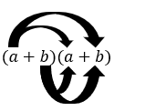
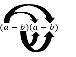
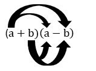

Binomische Formeln
Erklärung
Die binomischen Formeln sind eine Abkürzung beim Rechnen mit Klammern. Sie zeigen dir, wie das Ergebnis einer Rechnung wie zum Beispiel (a + b)2 immer nach dem gleichen Muster aufgebaut ist. So musst du nicht jeden Teil einzeln ausmultiplizieren.
Die Buchstaben a und b sind Platzhalter für beliebige Zahlen oder Variablen.
Plus-Formel
(a + b)2 = a2 + 2ab + b2
Herleitung:
- (a + b)2 = (a + b) · (a + b)

- Jeden Teil der ersten Klammer mit jedem der zweiten multiplizieren:
a · a + a · b + b · a + b · b - Zusammenfassen: a2 + ab + ab + b2
- Endergebnis: a2 + 2ab + b2
Minus-Formel
(a - b)2 = a2 - 2ab + b2
Herleitung:
- (a - b)2 = (a - b) · (a - b)

- Multiplizieren (auf Vorzeichen achten!):
a · a - a · b - b · a + b · b - Zusammenfassen: a2 - ab - ab + b2
- Endergebnis: a2 - 2ab + b2
Plus-Minus-Formel
(a + b)(a - b) = a2 - b2
Herleitung:
- (a + b) · (a - b)

- Multiplizieren:
a · a + a · (-b) + b · a + b · (-b) - Zusammenfassen: a2 - ab + ab - b2
- Die mittleren Teile heben sich auf (-ab + ab = 0).
- Endergebnis: a2 - b2